By the end you have a Basic Attack the turn-based fight can pick: a Blueprint ability GA_Shark_BasicAttack that plays AM_Test_Combo and deals the action's damage when the punch lands, plus an action asset tagged BasicAttack in the test kit. What the screenshots cannot show comes from the LSGI code, and each step says which file.
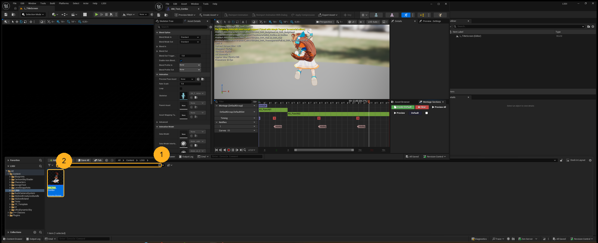
In the Content Browser, search AM_Test and double-click AM_Test_Combo to open it in the montage editor.
It lives in Content/LSGI/System/Combat/Test, next to GA_TestSharkAttackSequence, the test ability that already plays it.
The montage editor is open on AM_Test_Combo, with the Notifies track visible under the timeline.
The ability you build is only as good as the montage under it. Reading the montage first tells you when the hit happens, which is the moment damage must land, not the moment the ability starts.
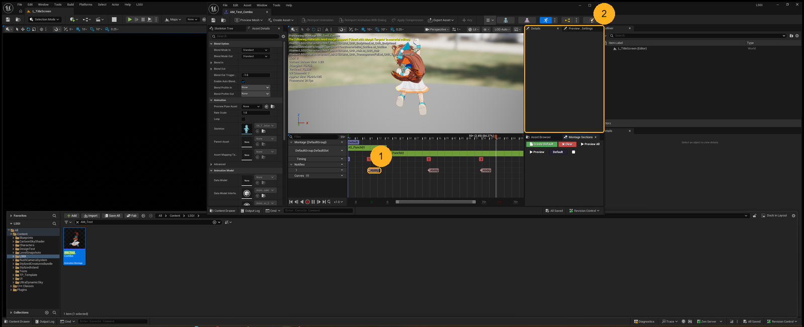
On the Notifies track there are three markers labelled Ability, one per punch. Click the first one. The Details panel on the right then shows that notify's settings.
These markers are AN_GameplayEvent notifies: each one sends a gameplay event to the character's ability system when the animation reaches it.
The first marker turns blue, and Details shows sections such as Anim Notify, Trigger Settings and Event.
The montage task in your ability listens only for the tags you give it (GASAbilityTask_PlayMontageAndWaitForEvent registers exactly that tag container). Give it the wrong tag and the punch lands with no damage and no error. And there are three markers, so the same event arrives three times; step 8 makes damage land once.
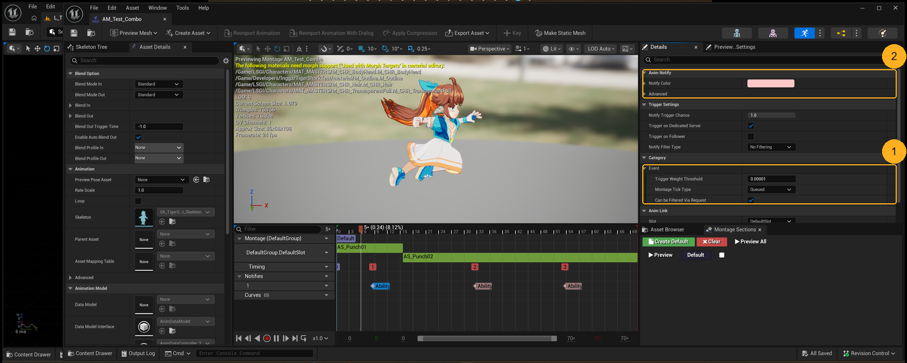
Scroll the whole Details panel: there is no Event Tag. The Event section under Category holds Trigger Weight Threshold, Montage Tick Type and Can be Filtered Via Request, which every notify has.
The tag is set once, on the notify class AN_GameplayEvent, and every marker of that class sends the same one. The montage file stores no tag value at all; the name Ability appears only inside AN_GameplayEvent (read from both asset files).
You know the tag is read from AN_GameplayEvent, not from the montage.
When a value you expect per instance is missing from Details, it usually lives on the class instead, and every placement shares it. That matters later: change the tag on AN_GameplayEvent and every montage using it changes too.
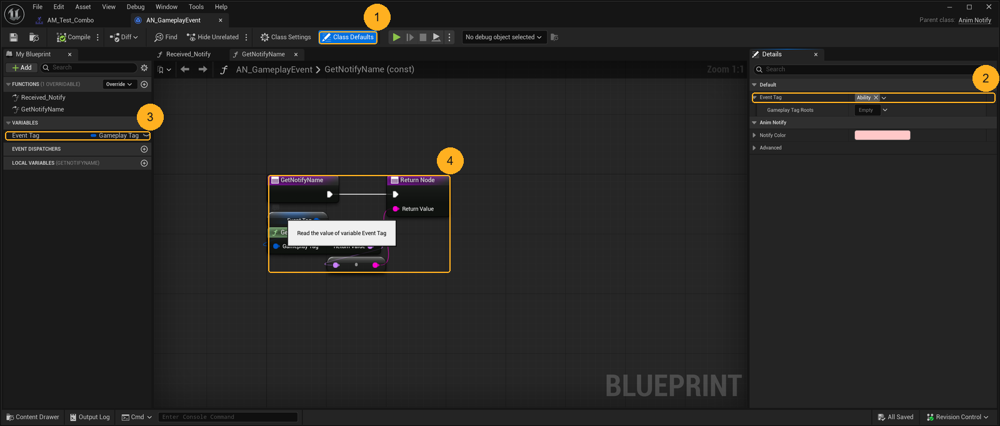
In the Content Browser search AN_GameplayEvent, open it, and click Class Defaults in the toolbar. Details shows Event Tag: Ability.
In My Blueprint, the Event Tag variable has a closed eye: it is not Instance Editable, which is why the montage's Details had no tag to show. The graph open on GetNotifyName returns the tag's name, which is the label you saw on each marker.
You can say the hit tag is Ability, and why the marker had no field for it.
This is the tag your ability's montage task must listen for. And because it lives on the class, every montage that places AN_GameplayEvent sends Ability: if a later montage needs a different hit tag, it needs a different notify (or this variable made Instance Editable), not a change here.
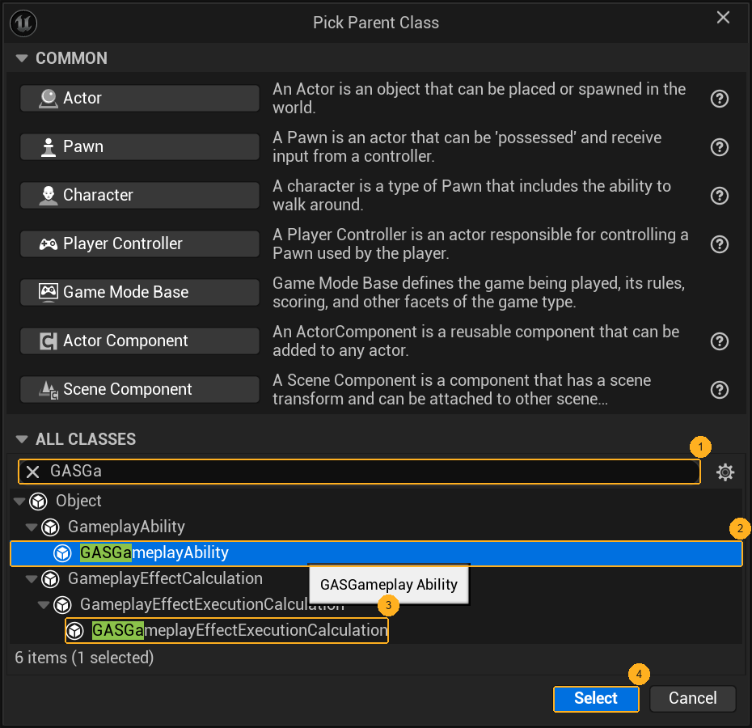
In Content/LSGI/System/Combat/Test, right-click an empty spot and choose Blueprint Class. In Pick Parent Class, expand All Classes, search GASGa, click GASGameplayAbility, then Select. Name the new asset GA_Shark_BasicAttack.
GASGameplayAbility is AgateGAS's ability base. It sits under the engine's GameplayAbility, as the tree shows.
A new GA_Shark_BasicAttack asset in the Test folder, and opening it shows Parent class: GAS Gameplay Ability in the top-right.
The parent decides which events and nodes the graph offers. The search also matches GASGameplayEffectExecutionCalculation; that one computes effect numbers and has no ability events, so picking it gives you a graph that cannot play a montage. Not LSGICombatAttackAbility either: its C++ deals the damage and ends the ability the instant it starts (LSGICombatAttackAbility.cpp), which would cut the montage off before the punch.
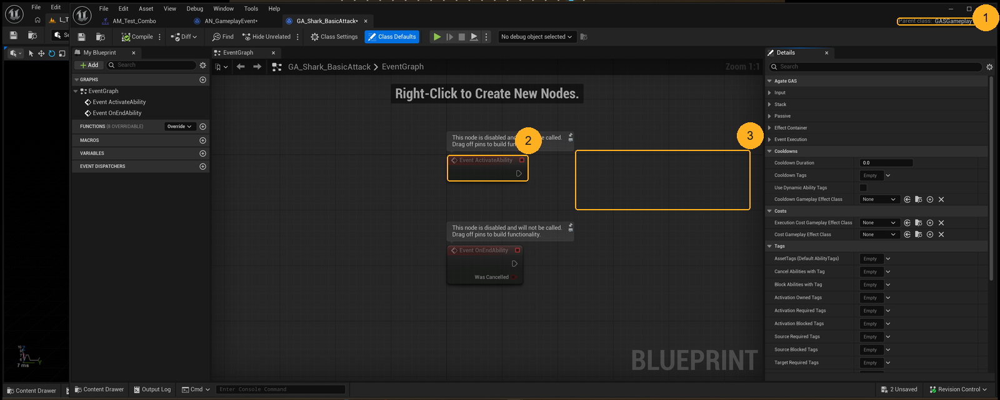
The graph opens with two greyed-out events. Leave them. Right-click an empty spot, search ActivateAbilityFromEvent, and add Event ActivateAbilityFromEvent.
Then drag from its Event Data pin, choose Promote to Variable, and name the variable SavedEventData. Wire the event's white execution pin into the new Set node.
Event ActivateAbilityFromEvent is wired into a Set SavedEventData node, and My Blueprint lists SavedEventData under Variables.
The turn flow starts this ability with a gameplay event whose payload holds the targets and the chosen action (LSGITurnBasedCombatSubsystem_Phases.cpp: TriggerAbilityFromGameplayEvent with Payload.TargetData and Payload.OptionalObject). Only the FromEvent version hands you that payload. You save it because the damage happens later, on the punch, and the montage's own events carry a different payload with no action in it.
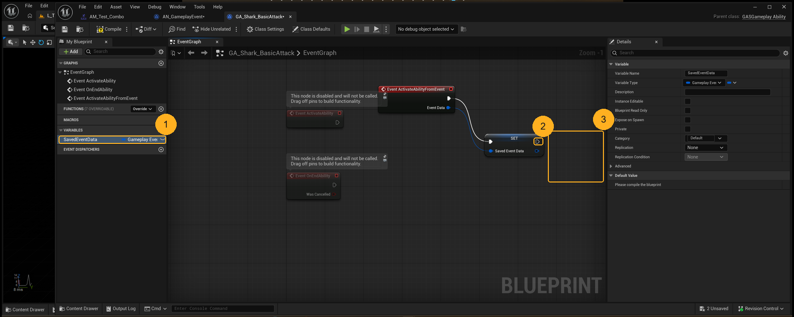
Drag from the white output pin of the SET node, release on empty space, and search PlayMontageAndWaitForEvent. Pick the one that has an Event Tags input (AgateGAS's GASAbilityTask_PlayMontageAndWaitForEvent), not the engine's plain PlayMontageAndWait.
On the new node set Montage To Play to AM_Test_Combo, and add Ability to Event Tags.
A PlayMontageAndWaitForEvent node after SET, Montage To Play is AM_Test_Combo, Event Tags holds Ability, and the node shows output pins including On Completed, On Interrupted, On Cancelled and Event Received.
The plain PlayMontageAndWait tells you when the montage finishes, but not when the punch lands. The Event version also fires Event Received for each gameplay event whose tag is in Event Tags, which is how the Ability notify from step 4 reaches your graph. With Event Tags empty, nothing arrives and the attack deals no damage, silently.
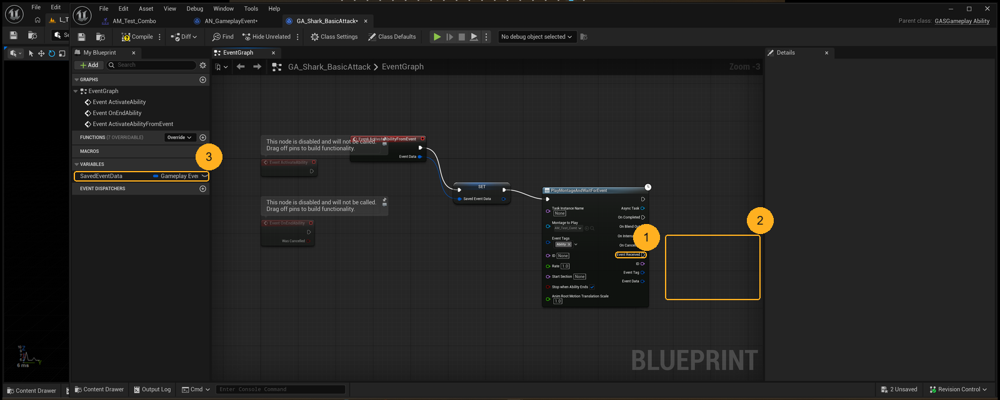
Drag from Event Received, drop on empty space, and add a Do Once node. From Do Once's Completed output, add Apply Action Damage (category LSGI | Combat | Damage).
Its Ability input already means Self. Payload needs the data you saved in step 6, so you read the variable back:
- In My Blueprint, under Variables, press and hold on SavedEventData, drag it onto an empty spot in the graph, and let go. A small menu pops up with Get SavedEventData and Set SavedEventData: pick Get. (Holding Ctrl while you drop skips the menu and makes a Get straight away.)
- A small node appears with one blue pin on its right. Drag from that pin to the Payload pin on Apply Action Damage.
- Do not use the Event Data pin on the montage node. That one is the punch's own data, not the action's.
Event Received → Do Once → Apply Action Damage, with SavedEventData (Get) wired into Payload.
AM_Test_Combo has three Ability markers, so Event Received fires three times. Each ApplyActionDamage call deals the action's full formula damage and rolls its own crit (LSGICombatDamageLibrary), so without Do Once one Basic Attack hits three times. And the payload must be the saved one: the montage's event carries the notify's data, with no targets and no action, so damage would find nothing to hit.
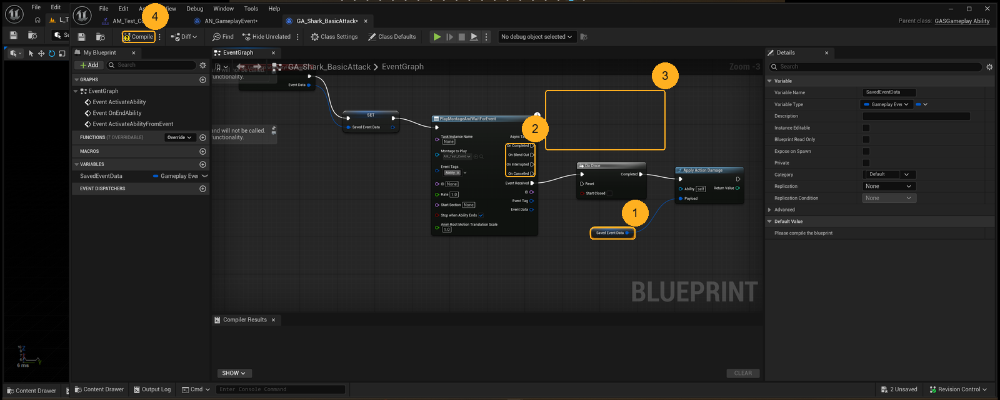
Right-click an empty spot and add End Ability. Drag a wire from On Completed into its white input pin, then do the same from On Interrupted and On Cancelled. One input pin takes all three wires.
Leave On Blend Out and the white output of Apply Action Damage unconnected. Then click Compile and save (Ctrl+S).
Compile shows a green tick with no errors, and the tab title loses its asterisk after saving.
The turn does not move on until this ability ends: the turn flow waits for the ability system's ended signal before the next combatant acts (HandleAbilityEnded in LSGITurnBasedCombatSubsystem_Phases.cpp). An ability that never calls End Ability leaves the battle stuck on this turn. Wiring only On Completed is not enough either: a montage that is interrupted or cancelled never completes.
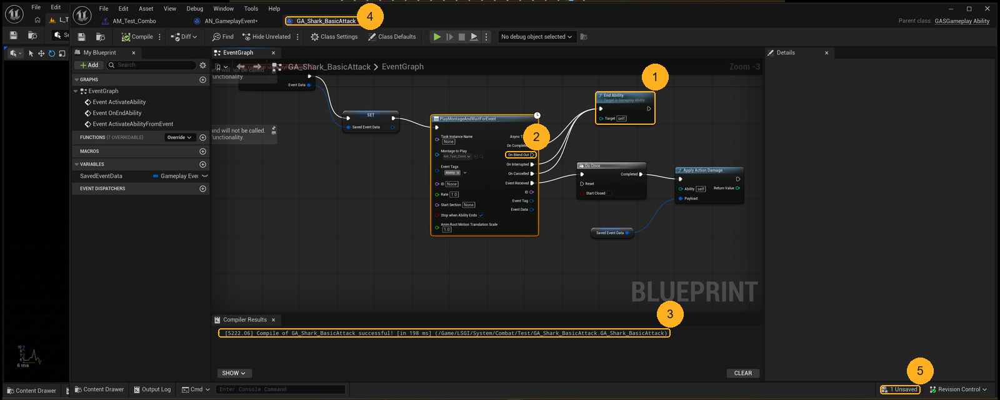
Read the graph left to right: the turn's event is saved, the montage plays, the first Ability hit deals damage once, and any way the montage stops ends the ability.
A filled pin has a wire, a hollow pin does not; that is how you check On Blend Out is empty without tracing lines.
Compiler Results says successful, the tab has no asterisk, and the only unsaved asset is one you did not mean to change.
A Blueprint that compiles is not proof it works, only that its wiring is legal. The checks that matter here are the ones a compiler cannot see: damage behind Do Once, Payload from the saved variable, and every montage ending routed to End Ability.
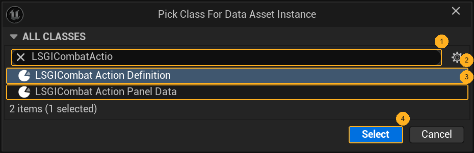
In Content/LSGI/Pack/Base/System/Combat (next to DA_CombatAction_Test_ActionA), right-click an empty spot, choose Miscellaneous > Data Asset, search LSGICombatActio, pick LSGICombat Action Definition, then Select. Name it DA_CombatAction_Shark_BasicAttack.
A new DA_CombatAction_Shark_BasicAttack asset next to DA_CombatAction_Test_ActionA.
The ability is *how* the attack plays; this asset is *what* the menu offers. A combatant's kit lists action definitions, not abilities (LSGICombatAbilitySet.h: "the set lists combat actions rather than raw ability classes"), so an ability with no action pointing at it is never granted and never offered.
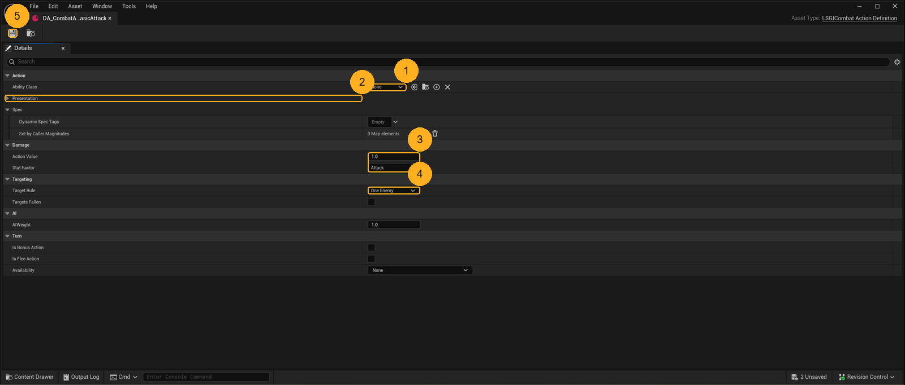
Set Ability Class to GA_Shark_BasicAttack. Expand Presentation, set Display Name to Basic Attack, and set Category to Combat.LSGI.Action.Category.BasicAttack. Then save.
Leave the rest: Action Value 1.0, Stat Factor Attack and Target Rule One Enemy are already what a basic attack needs, and Is Bonus Action stays off.
Ability Class shows GA_Shark_BasicAttack, Category shows BasicAttack, and the tab loses its asterisk.
Category is not decoration. It is how the game tells a Basic Attack from a Skill, a Burst or an Item: menu grouping, the fallback icon, and the option-loss rules all read it (LSGICombatTags.ini: "What kind of action it is. Drives menu grouping and the fallback icon."). The existing test action is tagged Skill, which is why it was not a basic attack. And damage is floor(Attack x Action Value x C / (C + Defense)), minimum 1 (LSGIDamageExecution), so Action Value 1.0 means one times the attacker's Attack before defense.
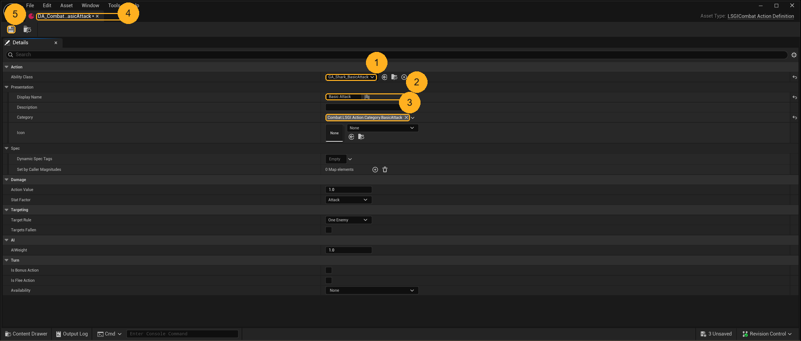
Check the three values you set. Then look at the tab title: an asterisk after the name means the change exists only in memory. Click Save and watch the asterisk disappear.
The tab title has no asterisk, and the Unsaved count dropped by one.
Unreal keeps edits in memory until you save, and the status bar's Unsaved count is the honest number. An unsaved action works in this editor session and is gone after a restart or a teammate's pull, which looks exactly like "it worked yesterday".
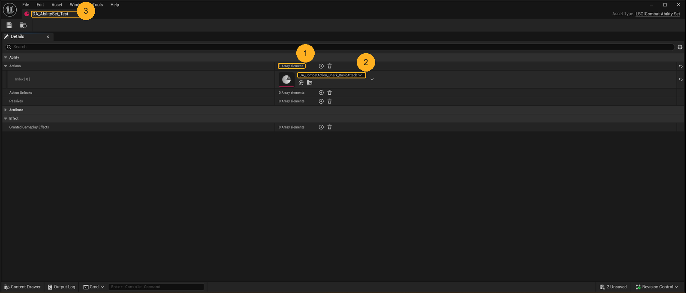
Open DA_AbilitySet_Test (in Content/LSGI/Pack/Base/System/Combat), expand Actions, and set Index [0] to DA_CombatAction_Shark_BasicAttack. This replaces the old test action, DA_CombatAction_Test_ActionA, so every turn this combatant takes is a damaging Basic Attack. Save.
Saving asks you to Check Out the asset: every .uasset here is a Git LFS lockable file (.gitattributes), and checking out takes the lock in your name so teammates cannot save over you. Pick Check Out Selected, not Make Writable.
Actions shows 1 Array element, Index [0] is DA_CombatAction_Shark_BasicAttack, and the tab has no asterisk.
This list is the combatant's whole menu and also what gets granted to its ability system: the set grants one ability per listed action (LSGICombatAbilitySet.h). The turn flow then looks up the granted ability by the action's Ability Class (FindAbilitySpecFromClass in LSGITurnBasedCombatSubsystem_Phases.cpp), so an action that is not in this list cannot run even if everything else is right. Replacing the old action also makes the test unambiguous: the old one was tagged Skill and dealt no damage.